Send your avatar to Animaze Avatar iOS app
The .avatar file format can hold multiple types of avatar content such as 3D/2D avatars, props, backgrounds. There are 3 ways to send an *.avatar file to your device and we are listing them below:
Via Animaze Editor, on Windows:
1. First, make sure that the iphone and the computer are on the same local area network (same LAN/WiFi).
2. There are two ways to enable local connect:
2.1. Go to the Tools menu in Animaze Editor and select Local connect from the dropdown menu.
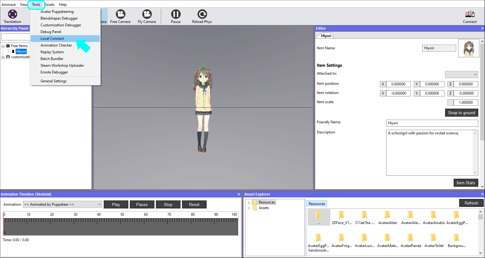
2.2. Click the Connect button in the upper right corner of the Animaze Editor to connect
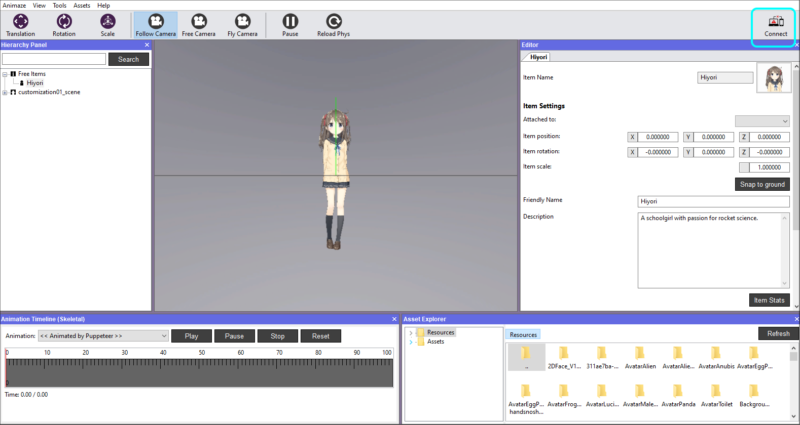
3. Animaze Connect window will appear, click on the Start button - a QR code will appear
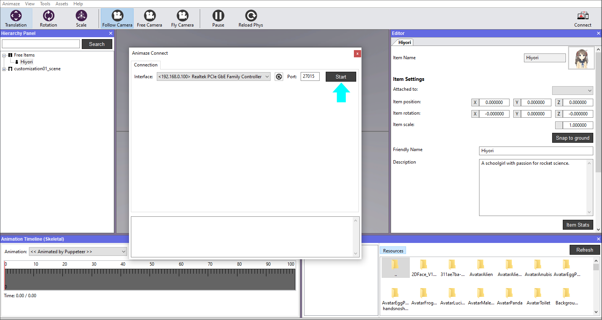
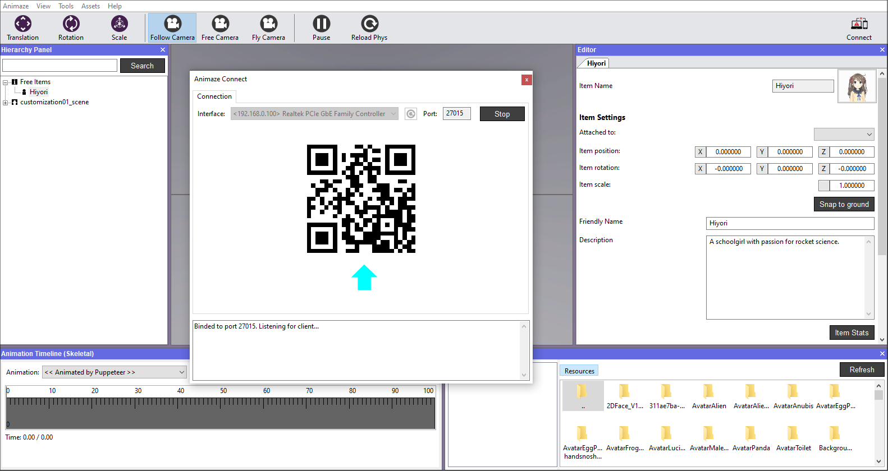
4. Now open Animaze Avatar application on your device and click on the Settings wheel in the upper right corner of the main screen
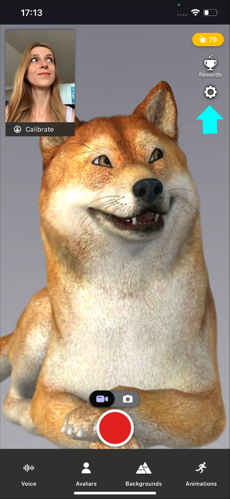
5. Scroll down to Animaze Editor and click Connect
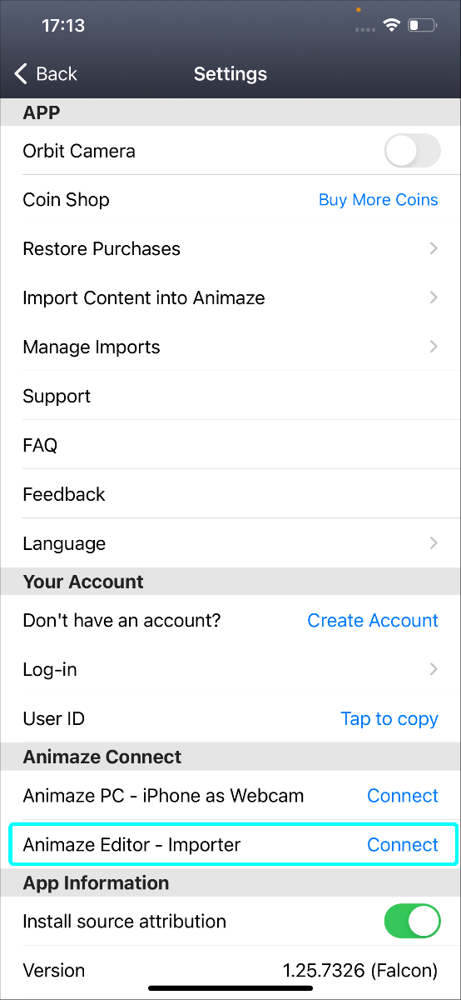
6. The rear camera is now open to point at the QR code and scan it
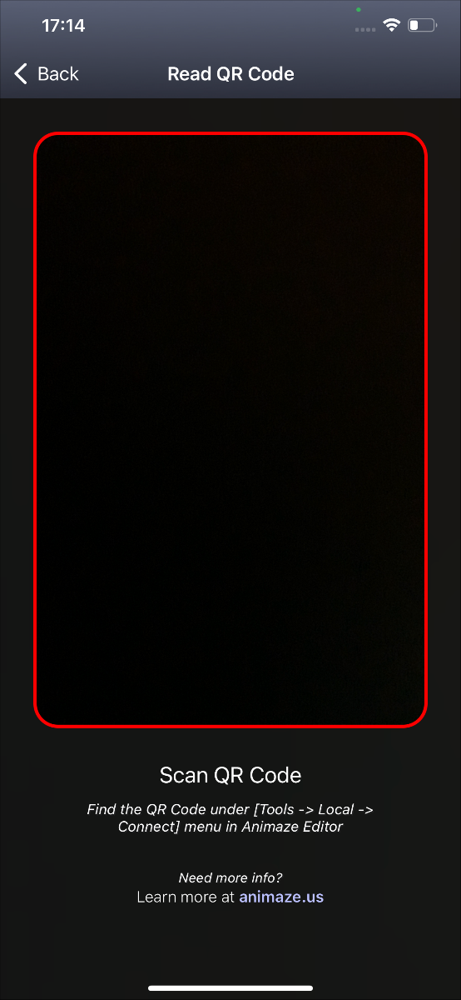
7. A confirmation of the connection will be received on your phone and on the Animaze Editor
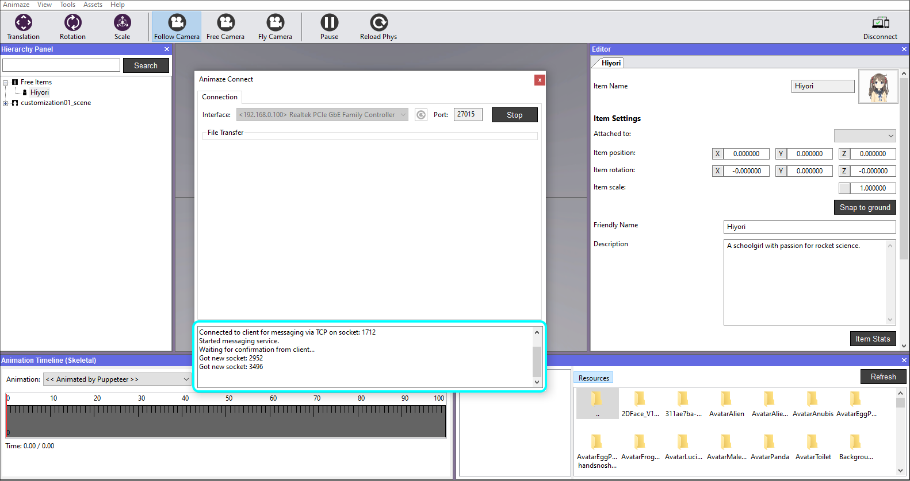
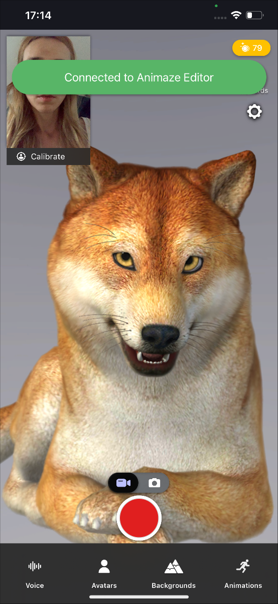
After you’ve connected the devices together, take the next steps to send the avatar to your mobile:
8. Go to the Hierarchy Panel, right click on the avatar and choose Send to device. This sends the avatar to your device, bundled in a *.avatar file format
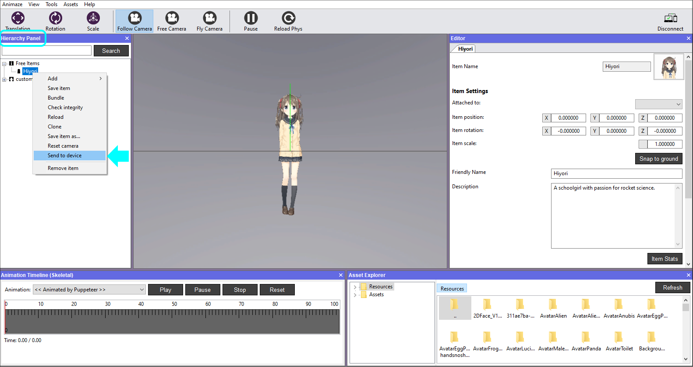
9. A pop-up will be appear on your mobile asking you to accept the file transfer
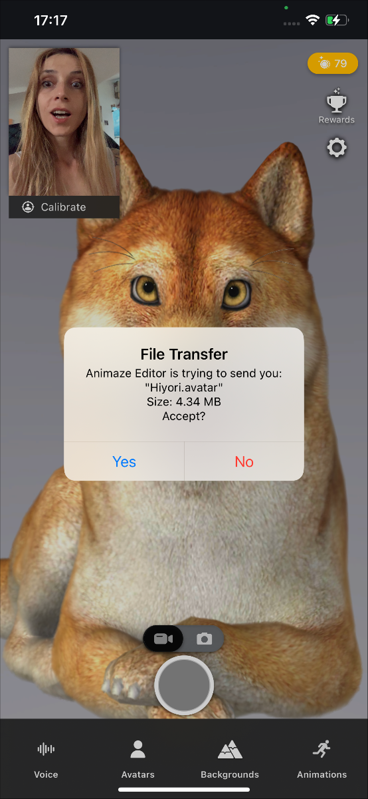
10. A confirmation message of the transfer status will be displayed on both devices
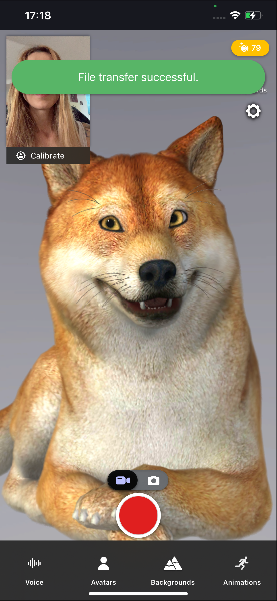
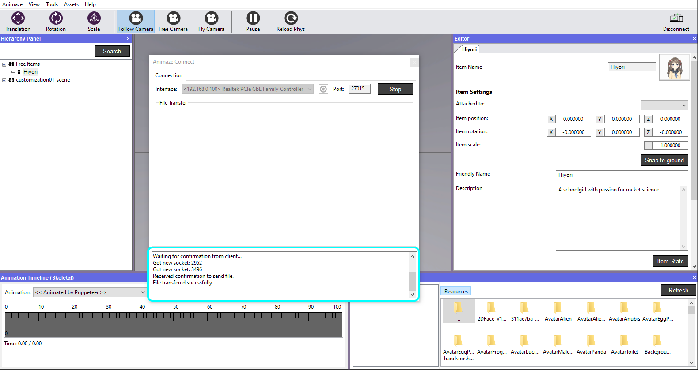
11. Open the avatar gallery in app and find your avatar under the Imported shelf
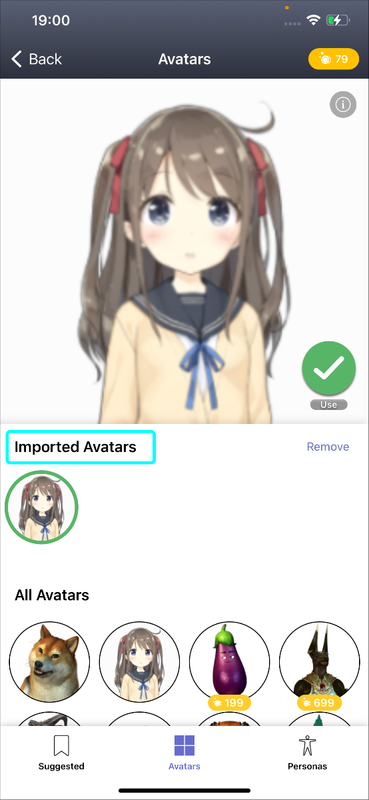
You have successfully sent the avatar to your phone :)
Via iTunes, on Windows:
If you have your .avatar file already prepared, you can send the model to your iPhone through iTunes, by following the steps below.
1. Connect your device to the computer and open iTunes. You might be asked to trust your device.
2. View your device by clicking on the device's icon in the upper-left corner of the iTunes window
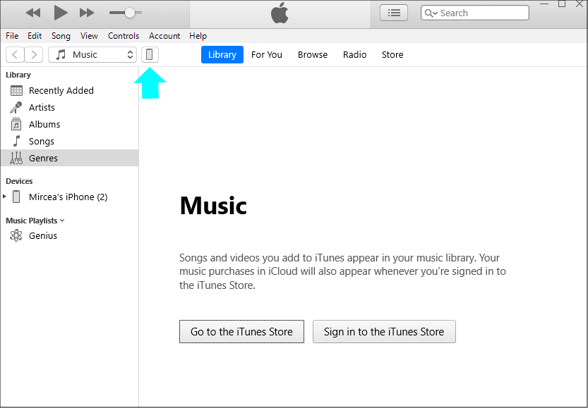
3. Click on File Sharing button in the left menu, then select Animaze app and simply drag and drop the *.avatar file from where you have it stored. Click Sync, then Done.
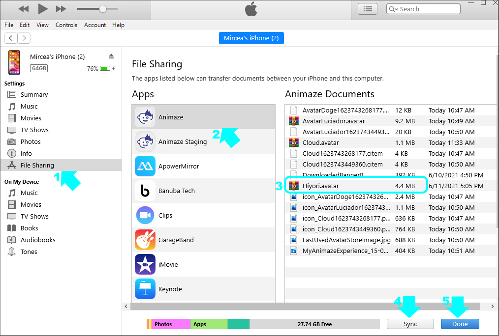
4. Restart the mobile app, you will find the sample avatar in the avatar gallery
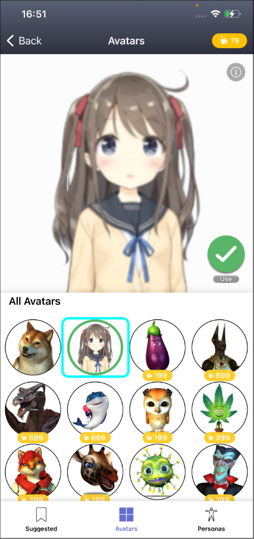
Via Finder, on Mac:
If you have your .avatar file already prepared, you can send the model to your phone through Finder, by following the steps below.
1. Connect the phone to you Mac
2. Go to Finder and select your phone

3. Once your phone is selected, select Files
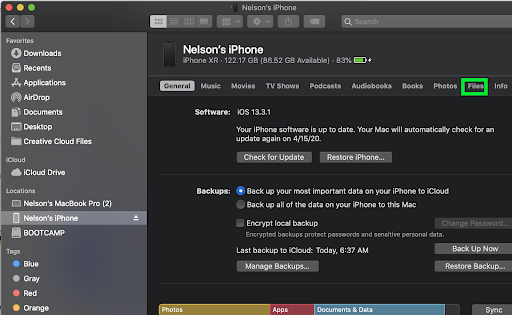
4. Select Animaze
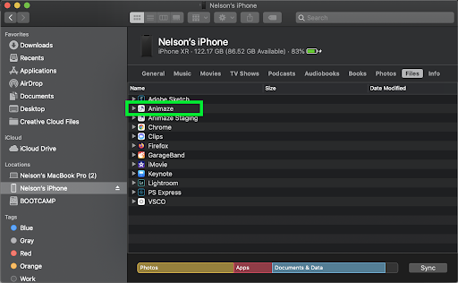
5. Drag and drop your *.avatar file from the location you have it stored in the Animaze app window and hit the Sync button
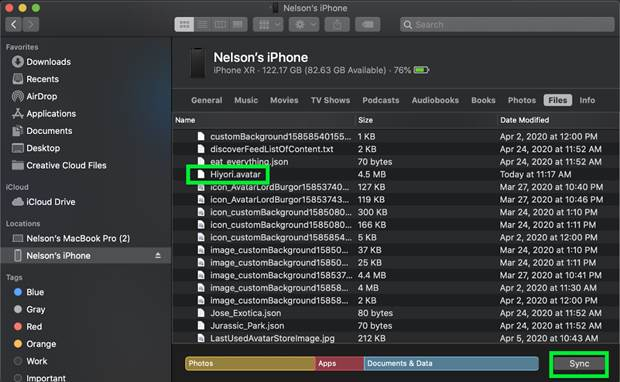
6. Restart the mobile app, you will find the sample avatar in the avatar gallery
Choose the method that suits you best, to bring the avatar in your device.